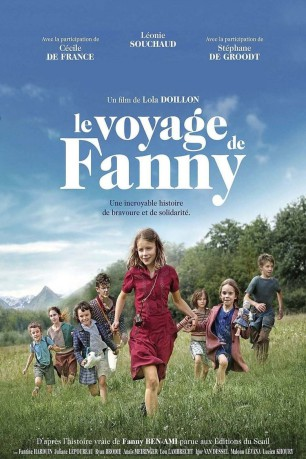

#9601 Fannys Reise
 
 IMDB-Wertung: 7.0 / 10
IMDB-Wertung: 7.0 / 10  Metascore: 0
Metascore: 0 
Fannys Reise beginnt 1943 von dem Waisenhaus aus, das in Frankreich ihr Zuhause ist. Weil Fanny (Léonie Souchaud), wie viele andere Kinder des Heims auch, Jüdin ist, muss sie beim Vormarsch der Nationalsozialisten um ihr Leben bangen. Gemeinsam mit weiteren Waisen bricht sie in Richtung der Schweizer Grenze auf, weil das Nachbarland Sicherheit verspricht. Doch der Weg dorthin ist weit und Fannys Reise führt sie bald ganz ohne die Hilfe von Erwachsenen durch die Berge, wobei die anderen Mädchen und Jungen sich auf ihre Leitung verlassen.
Jahr: 2016
Dauer: 95 Minuten
FSK: 6
Land: Frankreich Studio: Alive Vertrieb und MarketingTonspuren:
Untertitel: Deutsch,
Auflösung: 1080p (1920x808) Größe: 4526 MB
Genre: Drama, Krieg
Regisseur: Lola Doillon
Drehbuch: Fanny Ben-Ami, Lola Doillon, Lola Doillon, Anne Peyrègne, Anne Peyrègne
Soundtrack: Sylvain Favre, Gisèle Gérard-Tolini
Darsteller:
- Fantine Harduin als Erika
 Cécile de France als Madame Forman
Cécile de France als Madame Forman Stéphane De Groodt als Jean, le fermier
Stéphane De Groodt als Jean, le fermier- Anna Tenta als Mère maison Ose
- Pascaline Crêvecoeur als Mère de Fanny (flashback)
 Martin Swabey als Soldat allemand
Martin Swabey als Soldat allemand- Jeanne Abraham als Maman Louise (uncredited)
- Léonie Souchaud als Fanny
- Juliane Lepoureau als Georgette
- Ryan Brodie als Victor
- Anaïs Meiringer als Diane
- Lou Lambrecht als Rachel
- Igor van Dessel als Maurice
- Malonn Lévana als Marie
- Lucien Khoury als Jacques
- Victor Meutelet als Elie
- Elea Körner als Helga
- Alice D'Hauwe als Ethel
- Julien Vargas als Père Fanny (flashback)
- Jérémie Petrus als Julien
- Pierre Wallon als Directeur
- Hervé Sogne als Policier
- Didier Colfs als Policier
- Thomas Demarez als Policier
- Frédéric Clou als Policier
- Maureen Delys als Femme au bébé
- Olivier Massart als Homme bureau directrice
- David Manet als Gendarme
- Jean-François Rossion als Employé gare Annecy
- Yann Leriche als Cheminot Annemasse
- Colin Melquiond als Jeune homme Annemasse
- Eric Soubelet als Passeur Annemasse
- Stephanie Koplowicz als Femme Croix Rouge
- Ophélie Gelber als Femme Croix Rouge
- Matthias-Leonhard Lang als Chef militaire Allemand ferme
- Heiko Buchholz als Soldat ferme
- Pasquale D'Inca als Passeur 2
- Rachel Harduin als Erika 5 ans
- Clémentine Dandoy-Crêvecoeur als Georgette (3 ans)
- Fanny Ben-Ami als Herself
- Romàn Malempré als Enfant (uncredited)
- Lohen Van Houtte als Yves (uncredited)
Datei: X:\2016(A-F)\Fannys Reise (2016, FSK6, 1920x808).mkv seit 18.09.2018
Festplatte: HD 2016(A-Z)
 Es gibt insgesamt 147 Filme in der Gruppe '2016(A-F)'
Es gibt insgesamt 147 Filme in der Gruppe '2016(A-F)'